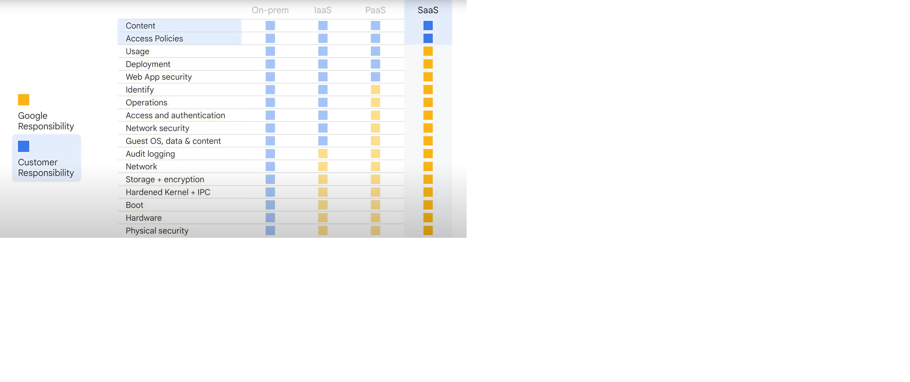

As part of this tech letter I am going to put down points on why and how cloud can revolutionize business
Why Cloud
Different ways organizations implement IT infrastructures:
- On-Premises: H/W and S/W applications hosted on-site located and operated within organizations data center
- Private cloud/Single-tenant/Corporate cloud: Hosted within organizations own data center or at a 3rd party co-location or by using private cloud provider. Only recommended to use if organization has already heavily invested in own infrastructure
E.g. Rackspace Technology, HPE Greenlake etc.. - Public cloud/Multi-tenant: On demand computing power and infrastructure are managed by 3rd party.
E.g. Google cloud platform, Amazon web services etc.. - Hybrid cloud: Combining an On-prem or private cloud with public cloud
- Multi cloud: Combining at least public clouds
On Prem
| Aspect | Pros | Cons |
|---|---|---|
| Infrastructure Control | Doesn't require 3rd Party access to data centers | Requires physical space |
| Cost Structure | No payment for ongoing access | Upfront investment for setting up systems |
| Resource Management | Dedicated resources | Requires specialized rooms and expert professionals |
| Security & Privacy | No sharing between tenants | Full responsibility for security management |
| Scalability | Complete control over scaling decisions | Difficult to scale, procurement process can take months |
Public cloud
| Aspect | Pros | Cons |
|---|---|---|
| Infrastructure Setup | No need of procuring systems | No control over hardware |
| Scalability | Compute power is available on-demand | Bandwidth and latency issues |
| Flexibility | Scalable, flexible, agile | Shared environment risk like performance issues in case of noisy neighbor |
| Cost Model | Pay for what is used | Cost effective but unpredictable costs if not followed proper control measures |
Cloud eras
VM Cloud era: New organizations, mostly startups, realized that they could forgo ever buying or operating hardware and just start in the cloud.
Infra cloud era: Organizations moved their IT infrastructure to cloud i.e. simply migrating or shifting systems
Transformation cloud era: Organizations that benefit from cloud computing to drive innovations, generate new revenue streams, and adapt quickly to market changes and customer needs.
Transformation mindset: think about how to build an environment that helps every person, process and tech to adapt to changing business needs, instead of asking where their apps and services should run.
Top drivers for digital transformation
- They want to be best at understanding and using data
- They want the best infrastructure
- They want to create the best hybrid workplace
- Their data, systems, users are secure
- They want to create a sustainable future together
How Google addresses the transformation through Google's transformation cloud
- Data: Through data cloud, data can be managed across the data life cycle regardless of whether the data is in google cloud or outside
- Open Infrastructure: Googles builds and supports open infrastructure which provides organizations freedom to securely innovate and scale from On-prem -> Edge -> cloud on an easy, transformative and open platform. e.g. Kubernetes, docker, TensorFlow.
Anthos a google product used to manage hybrid, multi cloud environments built on open technologies like Kubernetes, Istio and Knative, this enables open infrastructure. - Collaboration: Googles workspace brings communication and collaboration together E.g. google chat, Gmail, drive, docs, meets
- Trust: Organizations see cloud as more secure than on-premises, and they want to make it simple so that employees, customers and contractors can safely access their services
- Sustainable technology and services: Googles cloud operates as clean cloud with smartest data centers consuming 2 time less than traditional data centers. Moving to google cloud can help reduce enterprise IT carbon footprint.
| Concept | Open Source | Open Standard | Open Infrastructure |
|---|---|---|---|
| Definition | Source code is publicly accessible | Publicly available technical specifications | Infrastructure platforms built on open technologies |
| Scope | Entire source code is open | Technical specifications are open | Entire infrastructure tech stack is open |
| Analogy | Analogy: | Analogy: | Analogy: |
| Cookie/Kitchen Example | 1. You can get the recipe book and can modify the recipe to your liking 2. You get the tools to build your own playground, you can change the colors, make slides as you like adjust the height, widths etc.. |
1. Everyone agrees that cookies should be round and should work with any milk 2. You agree that all slides should have safety rails, swings should have safety chains |
1. Anyone can bake cookies in community kitchen or other kitchens 2. Anyone can bring their toys into playground and can decide what they want to add to the ground and everyone in community decides whether or not to add it to the ground |
| Examples | E.g. Kubernetes, Linux, etc.. | E.g. The Internet, XML, JSON etc.. | E.g. The Internet, OpenStack etc.. |
Google cloud adoption framework:
- Serves as a road map for organizations to quickly and efficiently adopt to cloud by creating a comprehensive plan of action.
- This is done by structuring and aligning short-term tactical, mid-term strategic and long-term transformative business objective
- A cloud maturity assessment help to establish where an organization is currently regarding the cloud adoption theme recognized by google cloud
- It also provide a map to real, tangible tasks that organizations need to adopt to cloud
Fundamental cloud concepts
Cloud total cost of ownership analysis:
- due to dynamic nature of cloud predicting costs is challenging, however a common mistake organizations do is to compare the running cost of cloud against their on-premises cost
- The on-prem costs are dominated by initial cost of procurement, like hardware and software costs, whereas cloud computing costs are based on monthly- subscription or pay-per-use model.
- Finally intangible costs such as opportunity cost of not migrating and the missed benefits that should be considered
Understanding differences between CapEx and OpEx help in understanding how operating costs differ between on-premises and cloud
| Comparison Aspect | Capital Expenditures (CapEx) | Operating Expenses (OpEx) |
|---|---|---|
| Nature of Expense | Upfront business expenses put toward fixed assets. | Recurring costs for a more immediate benefit. |
| Benefit Duration | Benefit their business for many years. | Represents the day-to-day expenses to run a business. |
| Examples (IT) | Buying hardware like servers, printers, or cooling systems, and maintaining these assets. | Yearly services like website hosting or domain registrations, or subscription fees for cloud services. |
| Cost Management/Budgeting | A one-time operational process completed annually in an on-premises model. | Spending must be monitored and controlled on an ongoing basis due to the dynamic nature of cloud use. |
| Impact on Cash Flow | Large one-time purchases are often high cost, meaning less free cash flow for the rest of the business. | Covers spendings on pay-as-you-go items and are not considered major long-term investments. |
| Cloud Relevance | Associated with the on-premises model, requiring huge upfront investments for data centers. | Enabled by the cloud's on-demand model, allowing organizations to pay only for what they use. |
Network bandwidth: is a measure of how much data a network can transfer in a given amount of time.
Units; Mbps, Gbps
Analogy: picture water flowing through a pipe. The bandwidth would be the volume of water a pipe can handle flowing through per second, meaning a wider pipe can handle more water.
Network latency: is the amount of time it takes for data to travel from one point to another.
Units: milli seconds(ms)
Analogy: latency is the delay from the moment the water pipe is opened until water starts flowing through.
Google's edge network
Google recommends organizations to keep the traffic on Google's private network for most of its journey . When user opens a webpage google responds to that request from an edge network location that will provide the lowest latency.
A network's edge is a place where a device or an organization's network connect to an internet. It's called the edge because it's the entry point to the network.
Cloud computing models and shared responsibility
Infrastructure as a Service(IAAS): offers infrastructure resources such as compute ,storage, networking, database as a service over the internet.
e.g. compute engine(you can create and run VM's), cloud storage(you can store any type of data)
Platform as a service(PAAS): offers a platform for developers to develop, run & manage their own cloud apps without having to build and maintain the underlying infrastructure.
e.g. cloud run(fully managed, serverless platform which takes care of provisioning servers and scaling app instances based on demand), big query(fully managed enterprise data warehouse which manages and analyzes data, and can be queried to answer big data questions with 0 infra management)
Software as a service(SAAS): delivers complete applications as a service
e.g. meets, YouTube, mail
Abstraction: As we move up from one model to another model, each model requires less knowledge and management of underlying infrastructure.
Choosing a computing model:
| Service Model | Pros | Tradeoffs |
|---|---|---|
| IaaS (Infrastructure as a Service) |
• Highly flexible and scalable service • Offers the most control and customization over infrastructure • Allows full control over server configurations • Transforms capital expenditures to operational expenses |
• Requires the most management responsibilities and technical expertise • Users bear the burden of managing and maintaining servers |
| PaaS (Platform as a Service) |
• Designed for building software products • Cost-effective way to build applications • Offloads infrastructure management to the cloud service provider • Retains complete control over application features |
• Requires some technical expertise and less management than IaaS • May offer less customization than IaaS • Potential for vendor lock-in |
| SaaS (Software as a Service) |
• Features are ready to use without installation hassle • Represents the least management responsibilities and technical expertise • No daily management of infrastructure |
• Offers the least control and customization over features and functionality |
Shared responsibility model:
Security of cloud is cloud providers responsibility
Security in cloud is responsibility of consume. If you configure or store it you are responsible to secure it.
